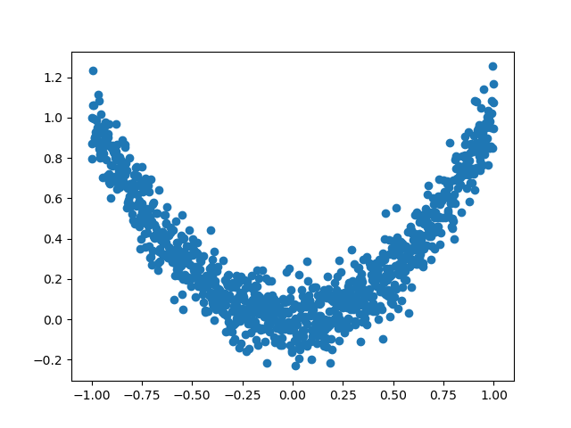
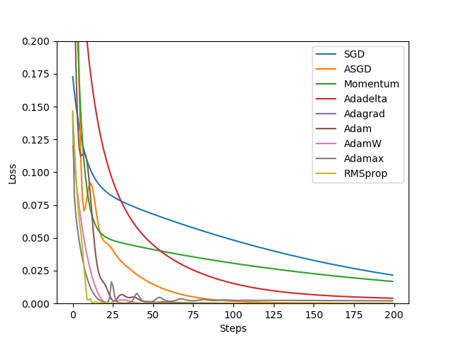

3.9 PyTorch优化器⚓︎
深度学习的目标是通过不断改变网络参数，使得参数能够对输入做各种非线性变换拟合输出，本质上就是一个函数去寻找最优解，只不过这个最优解是一个矩阵，而如何快速求得这个最优解是深度学习研究的一个重点，以经典的resnet-50为例，它大约有2000万个系数需要进行计算，那么我们如何计算出这么多系数，有以下两种方法：
- 第一种是直接暴力穷举一遍参数，这种方法从理论上行得通，但是实施上可能性基本为0，因为参数量过于庞大。
- 为了使求解参数过程更快，人们提出了第二种办法，即BP+优化器逼近求解。
因此，优化器是根据网络反向传播的梯度信息来更新网络的参数，以起到降低loss函数计算值，使得模型输出更加接近真实标签。
经过本节的学习，你将收获：
- 了解PyTorch的优化器
- 学会使用PyTorch提供的优化器进行优化
- 优化器的属性和构造
- 优化器的对比
3.9.1 PyTorch提供的优化器⚓︎
PyTorch很人性化的给我们提供了一个优化器的库torch.optim，在这里面提供了多种优化器。
- torch.optim.SGD
- torch.optim.ASGD
- torch.optim.Adadelta
- torch.optim.Adagrad
- torch.optim.Adam
- torch.optim.AdamW
- torch.optim.Adamax
- torch.optim.RAdam
- torch.optim.NAdam
- torch.optim.SparseAdam
- torch.optim.LBFGS
- torch.optim.RMSprop
- torch.optim.Rprop
而以上这些优化算法均继承于Optimizer，下面我们先来看下所有优化器的基类Optimizer。定义如下：
class Optimizer(object):
def __init__(self, params, defaults):
self.defaults = defaults
self.state = defaultdict(dict)
self.param_groups = []
Optimizer有三个属性：
defaults：存储的是优化器的超参数，例子如下：
{'lr': 0.1, 'momentum': 0.9, 'dampening': 0, 'weight_decay': 0, 'nesterov': False}
state：参数的缓存，例子如下：
defaultdict(<class 'dict'>, {tensor([[ 0.3864, -0.0131],
[-0.1911, -0.4511]], requires_grad=True): {'momentum_buffer': tensor([[0.0052, 0.0052],
[0.0052, 0.0052]])}})
param_groups：管理的参数组，是一个list，其中每个元素是一个字典，顺序是params，lr，momentum，dampening，weight_decay，nesterov，例子如下：
[{'params': [tensor([[-0.1022, -1.6890],[-1.5116, -1.7846]], requires_grad=True)], 'lr': 1, 'momentum': 0, 'dampening': 0, 'weight_decay': 0, 'nesterov': False}]
Optimizer还有以下的方法：
zero_grad()：清空所管理参数的梯度，PyTorch的特性是张量的梯度不自动清零，因此每次反向传播后都需要清空梯度。
def zero_grad(self, set_to_none: bool = False):
for group in self.param_groups:
for p in group['params']:
if p.grad is not None: #梯度不为空
if set_to_none:
p.grad = None
else:
if p.grad.grad_fn is not None:
p.grad.detach_()
else:
p.grad.requires_grad_(False)
p.grad.zero_()# 梯度设置为0
step()：执行一步梯度更新，参数更新
def step(self, closure):
raise NotImplementedError
add_param_group()：添加参数组
def add_param_group(self, param_group):
assert isinstance(param_group, dict), "param group must be a dict"
# 检查类型是否为tensor
params = param_group['params']
if isinstance(params, torch.Tensor):
param_group['params'] = [params]
elif isinstance(params, set):
raise TypeError('optimizer parameters need to be organized in ordered collections, but '
'the ordering of tensors in sets will change between runs. Please use a list instead.')
else:
param_group['params'] = list(params)
for param in param_group['params']:
if not isinstance(param, torch.Tensor):
raise TypeError("optimizer can only optimize Tensors, "
"but one of the params is " + torch.typename(param))
if not param.is_leaf:
raise ValueError("can't optimize a non-leaf Tensor")
for name, default in self.defaults.items():
if default is required and name not in param_group:
raise ValueError("parameter group didn't specify a value of required optimization parameter " +
name)
else:
param_group.setdefault(name, default)
params = param_group['params']
if len(params) != len(set(params)):
warnings.warn("optimizer contains a parameter group with duplicate parameters; "
"in future, this will cause an error; "
"see github.com/PyTorch/PyTorch/issues/40967 for more information", stacklevel=3)
# 上面好像都在进行一些类的检测，报Warning和Error
param_set = set()
for group in self.param_groups:
param_set.update(set(group['params']))
if not param_set.isdisjoint(set(param_group['params'])):
raise ValueError("some parameters appear in more than one parameter group")
# 添加参数
self.param_groups.append(param_group)
load_state_dict()：加载状态参数字典，可以用来进行模型的断点续训练，继续上次的参数进行训练
def load_state_dict(self, state_dict):
r"""Loads the optimizer state.
Arguments:
state_dict (dict): optimizer state. Should be an object returned
from a call to :meth:`state_dict`.
"""
# deepcopy, to be consistent with module API
state_dict = deepcopy(state_dict)
# Validate the state_dict
groups = self.param_groups
saved_groups = state_dict['param_groups']
if len(groups) != len(saved_groups):
raise ValueError("loaded state dict has a different number of "
"parameter groups")
param_lens = (len(g['params']) for g in groups)
saved_lens = (len(g['params']) for g in saved_groups)
if any(p_len != s_len for p_len, s_len in zip(param_lens, saved_lens)):
raise ValueError("loaded state dict contains a parameter group "
"that doesn't match the size of optimizer's group")
# Update the state
id_map = {old_id: p for old_id, p in
zip(chain.from_iterable((g['params'] for g in saved_groups)),
chain.from_iterable((g['params'] for g in groups)))}
def cast(param, value):
r"""Make a deep copy of value, casting all tensors to device of param."""
.....
# Copy state assigned to params (and cast tensors to appropriate types).
# State that is not assigned to params is copied as is (needed for
# backward compatibility).
state = defaultdict(dict)
for k, v in state_dict['state'].items():
if k in id_map:
param = id_map[k]
state[param] = cast(param, v)
else:
state[k] = v
# Update parameter groups, setting their 'params' value
def update_group(group, new_group):
...
param_groups = [
update_group(g, ng) for g, ng in zip(groups, saved_groups)]
self.__setstate__({'state': state, 'param_groups': param_groups})
state_dict()：获取优化器当前状态信息字典
def state_dict(self):
r"""Returns the state of the optimizer as a :class:`dict`.
It contains two entries:
* state - a dict holding current optimization state. Its content
differs between optimizer classes.
* param_groups - a dict containing all parameter groups
"""
# Save order indices instead of Tensors
param_mappings = {}
start_index = 0
def pack_group(group):
......
param_groups = [pack_group(g) for g in self.param_groups]
# Remap state to use order indices as keys
packed_state = {(param_mappings[id(k)] if isinstance(k, torch.Tensor) else k): v
for k, v in self.state.items()}
return {
'state': packed_state,
'param_groups': param_groups,
}
3.9.2 实际操作⚓︎
import os
import torch
# 设置权重，服从正态分布 --> 2 x 2
weight = torch.randn((2, 2), requires_grad=True)
# 设置梯度为全1矩阵 --> 2 x 2
weight.grad = torch.ones((2, 2))
# 输出现有的weight和data
print("The data of weight before step:\n{}".format(weight.data))
print("The grad of weight before step:\n{}".format(weight.grad))
# 实例化优化器
optimizer = torch.optim.SGD([weight], lr=0.1, momentum=0.9)
# 进行一步操作
optimizer.step()
# 查看进行一步后的值，梯度
print("The data of weight after step:\n{}".format(weight.data))
print("The grad of weight after step:\n{}".format(weight.grad))
# 权重清零
optimizer.zero_grad()
# 检验权重是否为0
print("The grad of weight after optimizer.zero_grad():\n{}".format(weight.grad))
# 输出参数
print("optimizer.params_group is \n{}".format(optimizer.param_groups))
# 查看参数位置，optimizer和weight的位置一样，我觉得这里可以参考Python是基于值管理
print("weight in optimizer:{}\nweight in weight:{}\n".format(id(optimizer.param_groups[0]['params'][0]), id(weight)))
# 添加参数：weight2
weight2 = torch.randn((3, 3), requires_grad=True)
optimizer.add_param_group({"params": weight2, 'lr': 0.0001, 'nesterov': True})
# 查看现有的参数
print("optimizer.param_groups is\n{}".format(optimizer.param_groups))
# 查看当前状态信息
opt_state_dict = optimizer.state_dict()
print("state_dict before step:\n", opt_state_dict)
# 进行5次step操作
for _ in range(50):
optimizer.step()
# 输出现有状态信息
print("state_dict after step:\n", optimizer.state_dict())
# 保存参数信息
torch.save(optimizer.state_dict(),os.path.join(r"D:\pythonProject\Attention_Unet", "optimizer_state_dict.pkl"))
print("----------done-----------")
# 加载参数信息
state_dict = torch.load(r"D:\pythonProject\Attention_Unet\optimizer_state_dict.pkl") # 需要修改为你自己的路径
optimizer.load_state_dict(state_dict)
print("load state_dict successfully\n{}".format(state_dict))
# 输出最后属性信息
print("\n{}".format(optimizer.defaults))
print("\n{}".format(optimizer.state))
print("\n{}".format(optimizer.param_groups))
3.9.3 输出结果⚓︎
# 进行更新前的数据，梯度
The data of weight before step:
tensor([[-0.3077, -0.1808],
[-0.7462, -1.5556]])
The grad of weight before step:
tensor([[1., 1.],
[1., 1.]])
# 进行更新后的数据，梯度
The data of weight after step:
tensor([[-0.4077, -0.2808],
[-0.8462, -1.6556]])
The grad of weight after step:
tensor([[1., 1.],
[1., 1.]])
# 进行梯度清零的梯度
The grad of weight after optimizer.zero_grad():
tensor([[0., 0.],
[0., 0.]])
# 输出信息
optimizer.params_group is
[{'params': [tensor([[-0.4077, -0.2808],
[-0.8462, -1.6556]], requires_grad=True)], 'lr': 0.1, 'momentum': 0.9, 'dampening': 0, 'weight_decay': 0, 'nesterov': False}]
# 证明了优化器的和weight的储存是在一个地方，Python基于值管理
weight in optimizer:1841923407424
weight in weight:1841923407424
# 输出参数
optimizer.param_groups is
[{'params': [tensor([[-0.4077, -0.2808],
[-0.8462, -1.6556]], requires_grad=True)], 'lr': 0.1, 'momentum': 0.9, 'dampening': 0, 'weight_decay': 0, 'nesterov': False}, {'params': [tensor([[ 0.4539, -2.1901, -0.6662],
[ 0.6630, -1.5178, -0.8708],
[-2.0222, 1.4573, 0.8657]], requires_grad=True)], 'lr': 0.0001, 'nesterov': True, 'momentum': 0.9, 'dampening': 0, 'weight_decay': 0}]
# 进行更新前的参数查看，用state_dict
state_dict before step:
{'state': {0: {'momentum_buffer': tensor([[1., 1.],
[1., 1.]])}}, 'param_groups': [{'lr': 0.1, 'momentum': 0.9, 'dampening': 0, 'weight_decay': 0, 'nesterov': False, 'params': [0]}, {'lr': 0.0001, 'nesterov': True, 'momentum': 0.9, 'dampening': 0, 'weight_decay': 0, 'params': [1]}]}
# 进行更新后的参数查看，用state_dict
state_dict after step:
{'state': {0: {'momentum_buffer': tensor([[0.0052, 0.0052],
[0.0052, 0.0052]])}}, 'param_groups': [{'lr': 0.1, 'momentum': 0.9, 'dampening': 0, 'weight_decay': 0, 'nesterov': False, 'params': [0]}, {'lr': 0.0001, 'nesterov': True, 'momentum': 0.9, 'dampening': 0, 'weight_decay': 0, 'params': [1]}]}
# 存储信息完毕
----------done-----------
# 加载参数信息成功
load state_dict successfully
# 加载参数信息
{'state': {0: {'momentum_buffer': tensor([[0.0052, 0.0052],
[0.0052, 0.0052]])}}, 'param_groups': [{'lr': 0.1, 'momentum': 0.9, 'dampening': 0, 'weight_decay': 0, 'nesterov': False, 'params': [0]}, {'lr': 0.0001, 'nesterov': True, 'momentum': 0.9, 'dampening': 0, 'weight_decay': 0, 'params': [1]}]}
# defaults的属性输出
{'lr': 0.1, 'momentum': 0.9, 'dampening': 0, 'weight_decay': 0, 'nesterov': False}
# state属性输出
defaultdict(<class 'dict'>, {tensor([[-1.3031, -1.1761],
[-1.7415, -2.5510]], requires_grad=True): {'momentum_buffer': tensor([[0.0052, 0.0052],
[0.0052, 0.0052]])}})
# param_groups属性输出
[{'lr': 0.1, 'momentum': 0.9, 'dampening': 0, 'weight_decay': 0, 'nesterov': False, 'params': [tensor([[-1.3031, -1.1761],
[-1.7415, -2.5510]], requires_grad=True)]}, {'lr': 0.0001, 'nesterov': True, 'momentum': 0.9, 'dampening': 0, 'weight_decay': 0, 'params': [tensor([[ 0.4539, -2.1901, -0.6662],
[ 0.6630, -1.5178, -0.8708],
[-2.0222, 1.4573, 0.8657]], requires_grad=True)]}]
注意：
- 每个优化器都是一个类，我们一定要进行实例化才能使用，比如下方实现：
class Net(nn.Moddule):
···
net = Net()
optim = torch.optim.SGD(net.parameters(),lr=lr)
optim.step()
- optimizer在一个神经网络的epoch中需要实现下面两个步骤：
- 梯度置零
- 梯度更新
optimizer = torch.optim.SGD(net.parameters(), lr=1e-5)
for epoch in range(EPOCH):
...
optimizer.zero_grad() #梯度置零
loss = ... #计算loss
loss.backward() #BP反向传播
optimizer.step() #梯度更新
from torch import optim
from torchvision.models import resnet18
net = resnet18()
optimizer = optim.SGD([
{'params':net.fc.parameters()},#fc的lr使用默认的1e-5
{'params':net.layer4[0].conv1.parameters(),'lr':1e-2}],lr=1e-5)
# 可以使用param_groups查看属性
3.9.4 实验⚓︎
为了更好的帮大家了解优化器，我们对PyTorch中的优化器进行了一个小测试
数据生成：
a = torch.linspace(-1, 1, 1000)
# 升维操作
x = torch.unsqueeze(a, dim=1)
y = x.pow(2) + 0.1 * torch.normal(torch.zeros(x.size()))
数据分布曲线：

网络结构
class Net(nn.Module):
def __init__(self):
super(Net, self).__init__()
self.hidden = nn.Linear(1, 20)
self.predict = nn.Linear(20, 1)
def forward(self, x):
x = self.hidden(x)
x = F.relu(x)
x = self.predict(x)
return x
下面这部分是测试图，纵坐标代表Loss，横坐标代表的是Step：

在上面的图片上，曲线下降的趋势和对应的steps代表了在这轮数据，模型下的收敛速度
注意:
优化器的选择是需要根据模型进行改变的，不存在绝对的好坏之分，我们需要多进行一些测试。
最后更新:
November 30, 2023
创建日期: November 30, 2023
创建日期: November 30, 2023